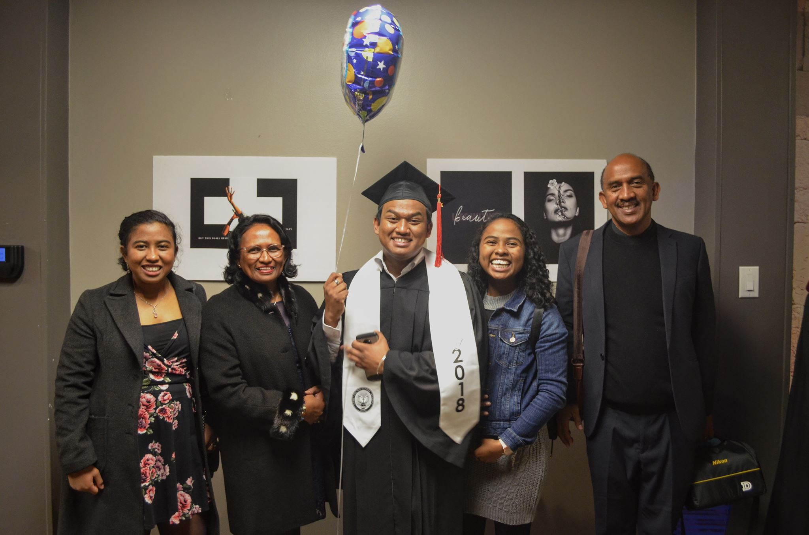

About Mahents
Mahents is a senior Computer Science and Engineering student at LeTourneau University in Longview, Texas. She is originally from Madagascar, and her full name is Harilanja Mahenintsoa Ravelomanantsoa. She chose to go by Mahents, which is short for her middle name Mahenintsoa.
Family
Mahents is from a family of five and is the youngest of three. Her parents live in Antananarivo, Madagascar where she grew up, and all of her siblings reside in the United States.
- Father: Harilala Ravelomanantsoa
Mr. Harilala is an Electrical Engineering professor at the Antananarivo Institute of Technology (IST) and lives in Antananarivo, Madagascar.
- Mother: Sahondra Olga Ranaivoson
Mrs. Olga is the executive secretary of the Independent National Human Rights Commission (CNIDH) and an Engineering professor at the Polytechnical University of Antananarivo and lives in Antananarivo, Madagascar.
- Sister: Mihary Ito
Mihary is a graduate student in Mechanical Engineering and in Business and is a part-time mechanical engineer at TEKMILL. She is married to Benjamin Ito and they live in Urbana, Illinois.
- Brother: Fitahiana Ravelomanantsoa
Fitahiana is a recent graduate from Christ for the Nations Institute (CFNI) and will start working as a worship minister soon. He has a bachelor's degree in Creative Media and another one in Worship. He lives in Dallas, Texas.
Character traits
- Mahents is an ESFJ from the Myers-Briggs personality types
- She is a type 9 from the Enneagram